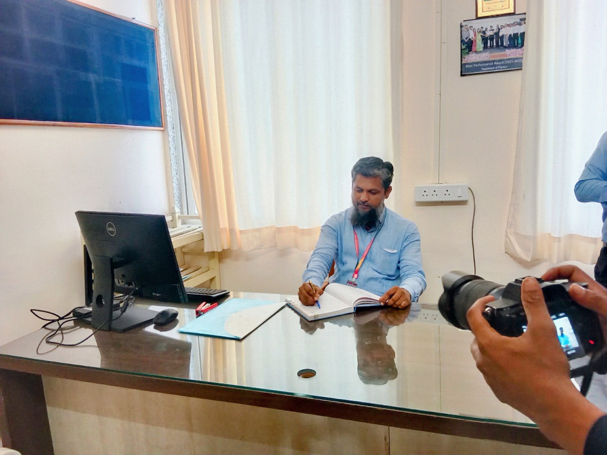

01
Functional
Nanomaterials
Materials for energy and environmental applications.
PHYSICS · FUNCTIONAL MATERIALS · ENERGY TECHNOLOGIES
Rayat Shikshan Sanstha’s
Yashavantrao Chavan Institute of Science (Autonomous), Satara
Karmaveer Bhaurao Patil University, Satara
Research spanning electrochromic devices, solar cells, functional nanomaterials, thin films, sensors and electrochemical energy technologies.
Materials for energy and environmental applications.
DSSC, polymer solar cells and transparent conducting films.
Electrochromism and niobium oxide thin films.
Supercapacitor electrodes and related materials.
Phosphate and layered-double-hydroxide based systems.
Gas sensing and multifunctional composite materials.
Research publications spanning electrochromic devices, thin films, solar cells, functional nanomaterials, sensors, supercapacitors, electrocatalysis, water splitting and related energy technologies. The publication record below combines the faculty publication list through 2024 with newer works indexed in ORCID and major scholarly databases.
Polymers 18(5), 583
DOI ↗Journal of Power Sources 668 · 15 March 2026
Batteries & Supercaps 9(2), 2026
DOI ↗Journal of Energy Storage 155, Part B · 20 April 2026
Small 21(50), e09336
DOI ↗Interactions 246(1), 2025
DOI ↗Inorganic Chemistry Communications 182, Part 2 · December 2025
Journal of Physics and Chemistry of Solids 206 · November 2025
Journal of Physics and Chemistry of Solids 205 · October 2025
Journal of Power Sources 644, 237089 · 15 July 2025
DOI ↗Materials Science and Engineering: B 316 · June 2025
Nanomaterials and Energy 14(1) · 4 March 2025
Materials Science and Engineering: B 313 · March 2025
Electrochimica Acta 513 · 10 February 2025
Journal of Alloys and Compounds 1010 · 5 January 2025
Applied Surface Science 661, 160081
DOI ↗Journal of Alloys and Compounds 989, 174334
Electrochimica Acta, 144614
Journal of Materials Science: Materials in Electronics 35(15), 1037
Science of Advanced Materials 16(5), 589–595
CrystEngComm 26, 5421
ChemSci Advances, 2024
Journal of Energy Storage 73, 109035
Materials Science and Engineering: B 298, 116827
Journal of Materials Science: Materials in Electronics 34(27), 1842
Molecular Catalysis 542, 113120
Applied Physics A 129(2), 158
International Journal of Energy Research 46(13), 18312–18327
DOI ↗International Journal of Energy Research 46(12), 17706–17713
IOP Conference Series: Materials Science and Engineering 1258(1), 012012
Journal of Materials Science: Materials in Electronics 33(25), 19884–19900
Applied Physics A 128(7), 611
Materials Science in Semiconductor Processing 143, 10655
International Journal of Energy Research 46(4), 5269–5279
ES Energy & Environment 15, 82–91
Sensors and Actuators B: Chemical 351, 130947
Journal of Energy Storage 43, 103297
DOI ↗Journal of Energy Storage 40, 102821
Materials Today: Proceedings 43, 2707–2710
Materials Science for Energy Technologies 3, 36–42
International Journal of Energy Research 44(2), 1233–1243
DOI ↗RSC Advances 10(33), 19353–19359
Materials Today: Proceedings 23, 430–436
AIP Conference Proceedings 1942(1), 140059
DOI ↗Journal of Materials Science: Materials in Electronics 28(2), 1612–1619
DOI ↗Energy and Environment Focus 5(3), 195–199
Journal of Materials Science: Materials in Electronics, Special Issue, 1–6
International Journal of Emerging Research in Management & Technology 4, 207–212
Ceramics International 40, 7669–7677
DOI ↗Current Applied Physics 12, 49–53
DOI ↗International Journal of Electrochemical Science 2, 797
Electrochimica Acta 56, 4462–4466
DOI ↗Organic Electronics 11, 1516
DOI ↗ACS Applied Materials & Interfaces 1, 2030
Solar Energy Materials and Solar Cells 93, 183
International Journal of Electrochemical Science 3, 512
Semiconductor Science and Technology 23, 245
Applied Surface Science 254, 5895
Nanotechnology 19, 845
International Journal of Electrochemical Science 2, 797
Electrochimica Acta 52, 3114
Electrochimica Acta 52, 4899
Solar Energy Materials and Solar Cells 91, 864
Solar Energy Materials and Solar Cells 91, 256
Applied Surface Science 253, 129
Applied Surface Science 253, 9365
Materials Chemistry and Physics 99, 101
Solid State Ionics 177, 3333
Journal of Materials Science: Materials in Electronics 16, 35
Applied Surface Science 250, 117
Applied Surface Science 252, 1643
For the most current citation counts, indexing status and newly added works, please refer to the linked researcher profiles.
Dr. Sarfraj H. Mujawar is an Associate Professor and Head of the Department of Physics at Yashavantrao Chavan Institute of Science, Satara.
His academic and research journey includes doctoral work in electrochromic display devices, research on dye-sensitized solar cells at NCL Pune, and postdoctoral work on polymer solar cells at Chonbuk National University, South Korea.
His documented research and innovation activities include functional nanomaterials, solar-cell materials, transparent conducting films, electrochemical electrodes, sensors, electrocatalysis and related device applications.
He also serves as Director, Research and Development Cell, K. B. P. University, Satara.

Shivaji University
Shivaji University
Shivaji University, Kolhapur · Research focus: Electrochromic Display Devices
Research focus: DSSC Solar Cells
Research focus: Polymer Solar Cells
Rayat Shikshan Sanstha
Yashavantrao Chavan Institute of Science, Satara
Completed research projects spanning solar-cell materials, electrochemical systems, functional nanomaterials, thin films, sustainable nanotechnology and IoT-enabled applications.
| Project | Duration | Funding | Agency |
|---|---|---|---|
| Synthesis and Characterization of Functional Nanomaterials for Solar Cells | 2015–2018 | ₹14.50 lakh | UGC, New Delhi |
| Electrochemical Approach Towards Fabrication of One Dimensional Architecture for Photo-electrochemical Solar Cells | 2011–2013 | ₹3.00 lakh | BCUD, Pune University |
| Nano Tube/Graphene Based Transparent and Conducting Thin Films by Spray Pyrolysis Technique | 2017–2019 | ₹2.00 lakh | BCUD, Pune University |
| Synthesis and Characterization Thin Films for Solar Cells Application | 2018–2019 | ₹50,000 | YCIS Satara |
| Green Synthesized Noble Metal Nanoparticles for Antifungal, Antimicrobial and Agricultural Application | 2021–2022 | ₹2.00 lakh | YCIS Satara |
| IoT Platform for Strawberry Farming | 2022–2024 | ₹50,000 | YCIS Satara |
Patent No. 401078-001
Patent No. 401085-001
Patent No. 409602-001
Patent No. 419436-001
Patent No. 419392-001
Patent No. 421317-001
US 2012/0012177 A1
202221069654
202221070834
202321090212
202421002826
202421013237
Dr. S. H. Mujawar and Dr. P. S. Patil · Research Signpost, Trivandrum
Dr. S. H. Mujawar and Dr. P. S. Patil · LAP Lambert Academic Publishing
Dr. S. H. Mujawar · Aavishkar Publications, Pune
Selected academic, professional and research recognitions highlighting Dr. Mujawar’s contributions in physics, materials research and teaching.
Shivaji University, Kolhapur
CSIR, New Delhi
Indian Institute of Technology Kanpur
National Chemical Laboratory, Pune
Chonbuk National University, South Korea
Admitted as an Associate Member following the Council meeting in December 2003.
Recognised among the World’s Top 5% Scientists in the 2025 SciRank Global Registry.
Transition Metal Oxide Nanomaterials · 2021–2025 impact window · India Rank #103 · Top 6.1% percentile.
Recognised at the Annual Prize Distribution Ceremony of Yashavantrao Chavan Institute of Science, Satara.
Guided a postgraduate research project on BTO-embedded PVDF nonwoven mats for scalable piezoelectric nanogenerators, presented at the 18th Maharashtra State Inter-University Research Convention.
Guided a postgraduate research project on polyol-synthesized cuprous oxide nanoparticles for photocatalytic dye degradation, presented at the 17th Maharashtra State Inter-University Research Convention.
Associate Professor & Head, Department of Physics
Rayat Shikshan Sanstha’s
Yashavantrao Chavan Institute of Science (Autonomous)
Karmaveer Bhaurao Patil University, Satara
Maharashtra, India
Director, Research and Development Cell
K. B. P. University, Satara